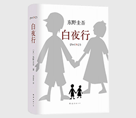

白夜行

| 作者: [日] 东野圭吾 著 ； 刘姿君 译 | 开本: 32开 |
| 出版社: 南海出版公司 | 纸张: 胶版纸 |
| 出版时间: 2008-09 | 页数: 538页 |
| 版次: 1 | 字数: 350千字 |
| ISBN: 9787544258609 | 定价: 39.50 |
| 分类: 小说 | 装帧: 精装 |
内容简介:
多年以前，大阪的一栋废弃建筑中发现一名遭利器刺死的男子。案件扑朔迷离，始终悬而未决。此后20年间，案件滋生出的恶逐渐萌芽生长，绽放出恶之花。案件相关者的人生逐渐被越来越重的阴影笼罩…… 我的天空里没有太阳，总是黑夜，但并不暗，因为有东西代替了太阳。虽然没有太阳那么明亮，但对我来说已经足够。凭借着这份光，我便能把黑夜当成白天。我从来就没有太阳，所以不怕失去。 《东野圭吾作品：白夜行》出版之后引起巨大轰动，使东野圭吾成为天王级作家。小说被改编成同名电视连续剧，与图书一同为作家带来了如潮好评，使他成为日本、韩国与中国台湾等地受欢迎的作家之一。“只希望能手牵手在太阳下散步”，这句象征《东野圭吾作品：白夜行》故事内核的绝望念想，有如一个美丽的幌子，随着无数凌乱、压抑、悲凉的事件片段如纪录片一样一一还原，仅剩一丝温情也被完全抛弃，万千读者在一曲救赎罪恶的爱情之中悲切动容。
作者简介:
东野圭吾，日本作家。1985年，凭《放学后》获第31届江户川乱步奖，开始专职写作；1999年，《秘密》获第52届日本推理作家协会奖；此后《白夜行》、《单恋》、《信》、《幻夜》先后入围直木奖。 2005年出版的《嫌疑人X的献身》第134届直木奖、第6届本格推理小说大奖，以及年度三大推理小说排行榜前列一并斩获；2008年，《流星之绊》获第43届新风奖。 2009年出版的《新参者》获两大推理小说排行榜年度前列；2012年，《浪矢杂货店的奇迹》获第7届中央公论文艺奖。
Copyright © 2018-2020 徐悦佳. All rights reserved.